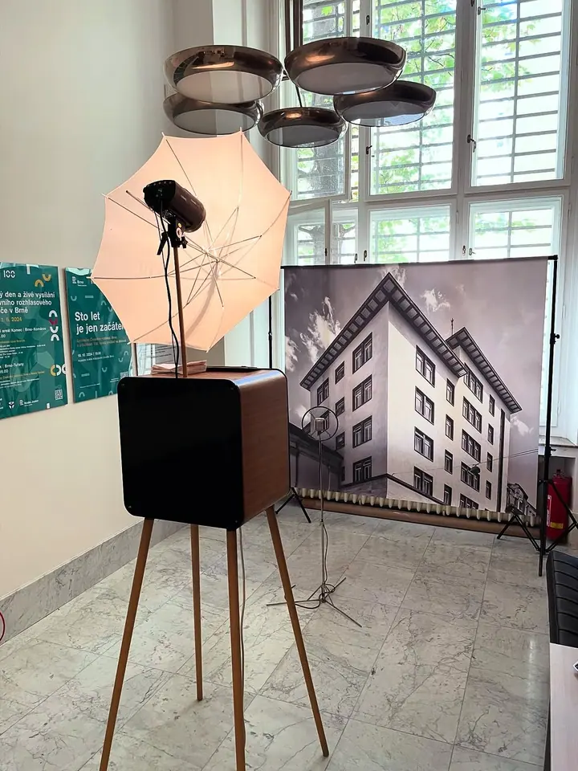
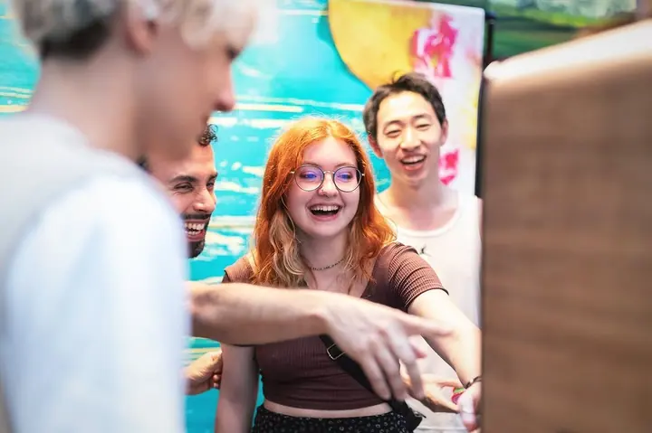
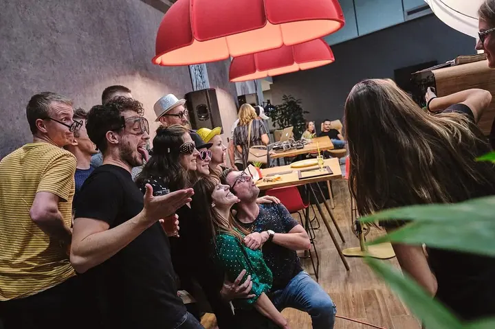
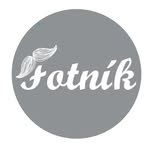

01 / 03
Firemní večírky a konference
Do fotek zakomponujeme logo firmy nebo název akce. Fotník za večer obslouží stovky hostů bez zbytečných front.
Zeptat se na termín→


Fotobudka všude tam, kde to žije
Zeptat se na termín →(01) Ahoj
Jmenuji se Fotník a nejsem obyčejná fotobudka. Nejvíc se blýsknu na svatbách, firemních večírcích a narozeninových oslavách. Fotku vám vytisknu za 6,6 vteřiny, takže si ji hned odnesete domů.
511lidí sleduje mou práci na Instagramu
68příspěvků s fotkami a příběhy
(02) Co fotím
01 / 03
Do fotek zakomponujeme logo firmy nebo název akce. Fotník za večer obslouží stovky hostů bez zbytečných front.
Zeptat se na termín→02 / 03
Narozeninové oslavy, maturitní plesy, festivaly i filmové premiéry. Hodí se všude tam, kde se chtějí lidé bavit.
Zeptat se na termín→Dále nabízím
Na fotkách může být vaše jméno a datum svatby. Hosté vám do svatebního alba nalepí fotky a připíšou k nim osobní vzkazy.
↗(04) Postup
Od první zprávy po hotovou galerii.
Krok 1 z 4
Napište nám přes formulář, e-mail nebo zavolejte. Fotobudku se vyplatí rezervovat s předstihem, hlavně na sobotní svatební termíny.
Krok 2 z 4
Připravíme design fotek s názvem akce, datem svatby nebo logem firmy. Fotopozadí si vyberete z naší nabídky.
Krok 3 z 4
Fotobudku přivezeme kamkoli po celé ČR a na místě ji nainstalujeme. Doprava je v ceně pronájmu.
Krok 4 z 4
Po celou akci je u fotobudky naše obsluha. Hosté se fotí s rekvizitami a tisknou fotky bez omezení.
Prostě se nám nebojte říct sýýýr
(05) Za objektivem
Jsem zábavný, rychlý a stylový. Z večírku udělám zážitek, na který se nezapomíná. Hosté si u mě nasadí rekvizity, zapózují a za pár vteřin drží v ruce vytištěnou fotku. Ovládám se přes dotykovou obrazovku a úsměvy můžete rovnou sdílet na sociálních sítích.
Přizpůsobím se vaší akci. Do fotek zakomponuji název večírku, datum svatby nebo logo firmy a pozadí si vyberete podle sebe. Mám jednoduchý design a reprezentativní vzhled, takže zapadnu do sálu, vinárny i konferenčního centra.
Nikdy na akci nejsem sám. Na místo mě přivezou a nainstalují a po celou dobu se u mě stará milá obsluha, která organizuje skupinky a vydává fotky. Za sebou mám už přes 200 eventů od Brna a Prahy po celou republiku.

Fotník
Fotník · Fotobudka na svatby, firemní večírky a oslavy
Neomezený tisk fotografií, originální fotorekvizity, fotopozadí dle výběru, ochranné obaly na fotky, grafika designu fotek a doprava po celé ČR. Po celou dobu je u fotobudky přítomna obsluha.
Cenovou nabídku vám připravíme podle termínu a typu akce. Stačí nám napsat přes formulář nebo na info@fotnik.cz.
Fotník vytiskne fotografii za 6,6 vteřiny. Během večera tak stihne obsloužit stovky hostů bez front.
Ano. Do fotek zakomponujeme název akce, datum svatby nebo logo firmy, aby grafika seděla k vaší události.
(07) Kontakt
Napište pár vět o tom, co si představujete, a termín, který se vám hodí.
info@fotnik.cz